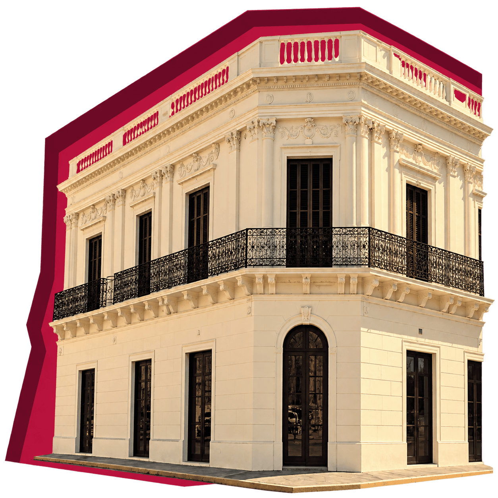

01
Visitas guiadas
Cada recorrido es una conversación con el pasado. Conocé la casa a través de sus espacios, sus objetos y las historias que los conectan.
Un encuentro con la arquitectura, la memoria y el patrimonio que mantienen viva la historia de Santa Fe.
Comenzá el recorrido
Vení a01 / NUESTRA HISTORIA
EL TIEMPO DEJA SUS HUELLASUna vivienda, un lugar de encuentro, un archivo y un museo. Cada etapa dejó una huella en esta casa del casco histórico santafesino.
Manuel Rodríguez adquiere el terreno, que había pertenecido a la orden mercedaria, y construye la vivienda que hoy conocemos como la Casa del Brigadier.
02 / LA CASA
UN RECORRIDO POR SU ARQUITECTURAPatios, puertas y detalles que nos invitan a mirar de cerca. Descubrí las distintas capas de una casa en transformación.
Un espacio de encuentro y circulación.
El ingreso y su arquitectura.
Una línea histórica de su evolución arquitectónica.
03 / PATRIMONIO
OBJETOS QUE NOS CUENTANRetratos, esculturas y documentos. Distintas formas de acercarnos al Brigadier y a la memoria de nuestra provincia.
SELECCIONÁ UNA IMAGEN PARA EXPLORARLA04 / ENCUENTROS
EL PATRIMONIO SE COMPARTELa historia también sucede hoy. Recorridos y propuestas educativas para encontrarnos, preguntar y descubrir.
Cada recorrido es una conversación con el pasado. Conocé la casa a través de sus espacios, sus objetos y las historias que los conectan.

Observar, dibujar y aprender: distintas maneras de acercarse al patrimonio y construir nuevas miradas sobre la historia de Santa Fe.

Una experiencia para descubrir en grupo. Si sos docente, contactá al museo para consultar disponibilidad y coordinar la visita de tu escuela.
05 / TU PRÓXIMA VISITA
EN EL CORAZÓN DEL BARRIO SURAcercate a descubrir una casa que sigue contando la historia de Santa Fe.
Cómo llegarAv. Gral. López 2792
Santa Fe de la Vera Cruz, Argentina
Para feriados y visitas grupales, consultá previamente con el museo.